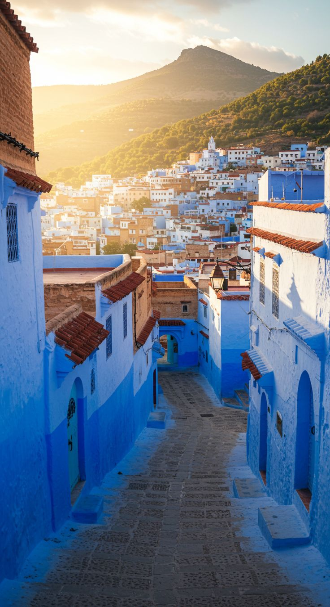
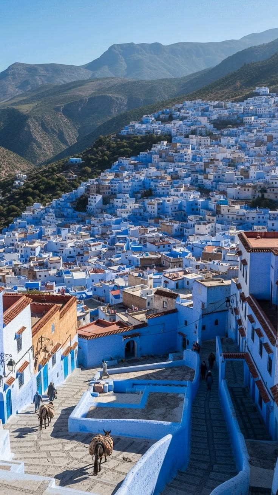
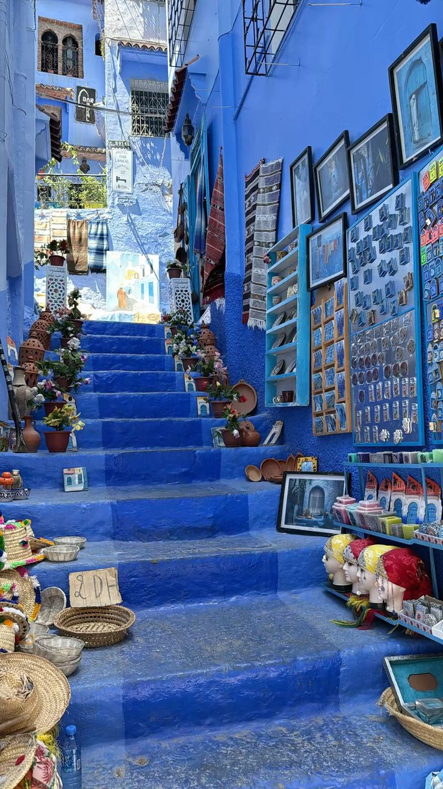
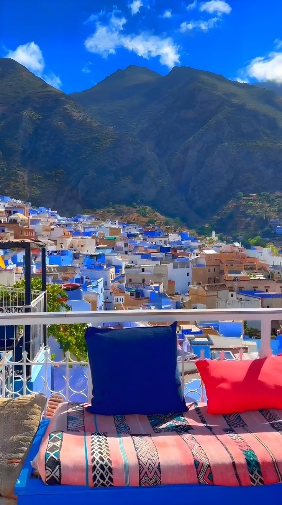

Bienvenue à Chefchaouen




Chefchaouen est une ville du nord du Maroc, nichée dans les montagnes du Rif. Connue dans le monde entier pour ses ruelles et bâtiments peints en bleu et blanc, elle est surnommée la « Perle Bleue » ou la « Ville Bleue » du Maroc.
La ville mélange des influences marocaines, espagnoles et juives, ce qui lui confère une architecture et une culture uniques. Fondée au XVe siècle, Chefchaouen attire chaque année des milliers de voyageurs venus du monde entier pour ses ruelles colorées, ses souks animés et sa nature préservée.
Que vous soyez amateur d'histoire, de randonnée ou de photographie, Chefchaouen vous offrira une expérience inoubliable au cœur des montagnes du Rif.
Pourquoi visiter Chefchaouen ?
- Ville bleue unique au monde — architecture andalouse peinte en bleu
- Randonnées et trekking dans les montagnes du Rif
- Médina historique à explorer à pied
- Souks artisanaux authentiques (tissus, cuir, épices)
- Destination idéale pour la photographie
- Cuisine marocaine et influences espagnoles
Pourquoi Chefchaouen est-elle peinte en bleu ?
La couleur bleue est intimement liée à l'histoire et à la culture de Chefchaouen. C'est la communauté juive qui, dans les années 1930, a introduit cette teinte comme symbole de paix et de spiritualité. Depuis, le bleu est devenu l'identité même de la ville.
La peinture bleue a aussi une utilité pratique : elle éloigne les moustiques grâce à un mélange traditionnel de chaux et d'eau. Aujourd'hui, chaque habitant repeint régulièrement sa façade, perpétuant cette tradition unique.
- La couleur est fabriquée à partir d'un mélange de chaux et d'eau
- Appliquée selon une technique traditionnelle transmise de génération en génération
- Symbole de paix, de spiritualité et d'identité culturelle
Découvrir Chefchaouen en vidéo
Plongez dans l'atmosphère unique de la ville bleue avec cette vidéo :
Comment se rendre à Chefchaouen ?
Chefchaouen est facilement accessible depuis les grandes villes marocaines en bus ou en taxi. Depuis Marrakech, le trajet dure environ 4 à 5 heures. Depuis Casablanca, il faut compter 5 à 6 heures en train ou en bus.
| Meilleure Période | Activités | Hébergement |
|---|---|---|
| Printemps et Été | Randonnée, Trekking, Exploration de la Médina | Hôtels, Riads, Auberges |
| Automne et Hiver | Visites historiques, Shopping dans les Souks | Maisons d'hôtes, Appartements, Villas |
| Randonnée Trekking Exploration Médina | ||
Options de transport depuis les grandes villes :
- Bus : Bon marché, nombreux départs quotidiens
- Taxi : Rapide et direct, idéal pour les pressés
- Train + Bus : Confortable et panoramique jusqu'à Fès, puis bus